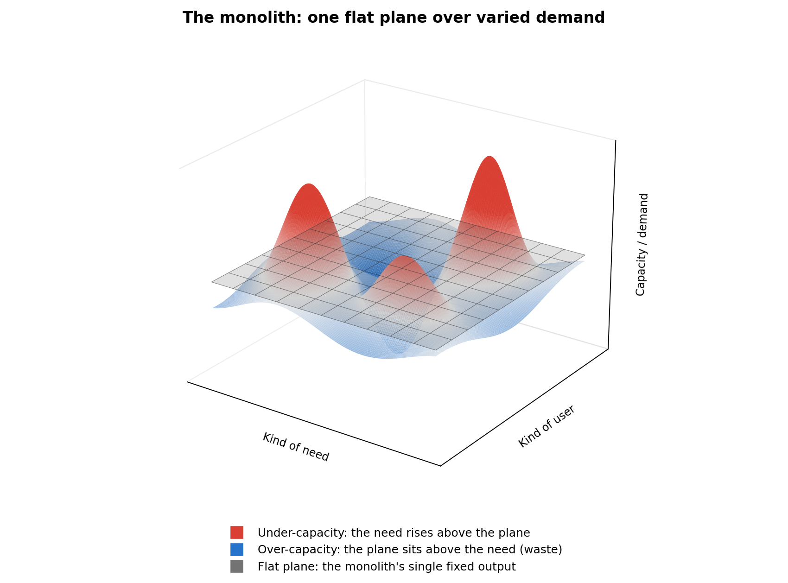
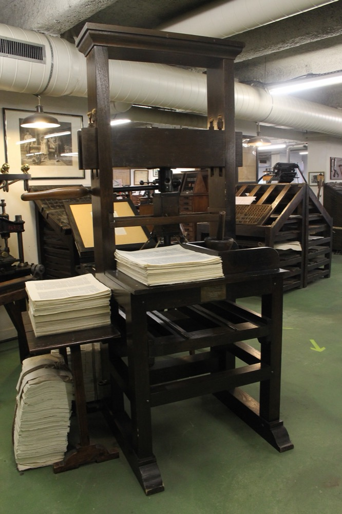
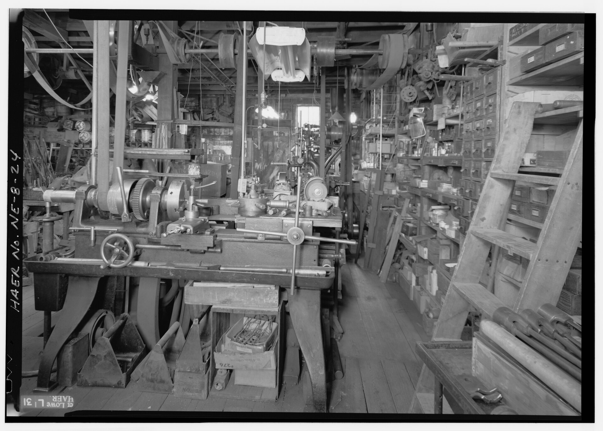
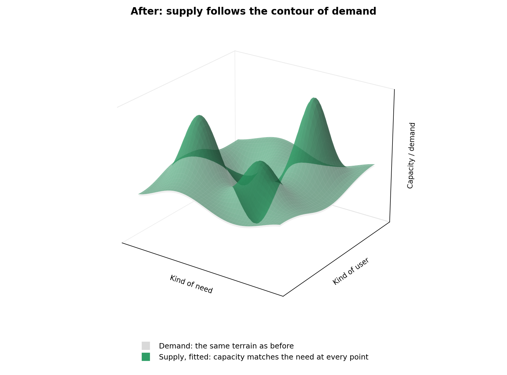

{{ page.title | escape }}
{{ page.subtitle | escape }}
Picture a landscape of everything people need. Some needs are mountains: heavy, demanding, specialized. Others are grooves: light, occasional, small. Now lay a flat plane over the whole landscape and say, "this is what you get."

Wherever the terrain rises above the plane, the work is under-served. Wherever it dips below, the capacity is wasted. The plane is only ever just right at the few points where it happens to touch the ground.
That plane is what I call a monolith: a single source that distributes some kind of power to everyone at one fixed level. This article argues that the same story keeps repeating. A monolith dominates, people live with the mismatch, and then a new technology makes it cheap to follow the terrain instead. I'll call the thing that falls the cost of fit.
The pattern, in six rows
In each case, one form of distribution was the sole distributor of something. It came with fixed constraints that nobody could tune. A new technology turned those constraints into parameters.

| Technology | Before | Monolith | After |
|---|---|---|---|
| Printing press | Scribes and scriptoria are the sole distributor of text, so a few texts exist in a few places, in one scholarly language. | Production of text | Text is fitted to the reader: vernacular languages, niche subjects, cheap pamphlets for small audiences. |
| Steam engine | Muscle and the water wheel are the sole distributor of power, fixed to a river's location and current. | Source of power | Power is fitted to the work: an engine can sit wherever the work is, sized to the job. |
| Electric motor | The steam engine is the sole distributor of power, with one pace and machines placed by where the shaft runs. | Delivery of power to the machines | Power is customized per machine: its size, speed, placement, and on/off. |
| Computer | Fixed-function machines and pools of human clerks are the sole distributor of computation, so each device does one kind of calculation. | Capability of computation | Software fits computation to each task, so one machine does any job. |
| Internet | Broadcast and print are the sole distributor of information and attention, giving everyone the same program, paper, or channel. | Distribution of information and attention | Information is fitted to each person: search, feeds, niche communities, individual publishing. |
| E-commerce | The brick-and-mortar shop is the sole distributor of marketing power, limited by audience, geography, and popularity. | Reach to customers | Marketing is customized per customer: audience, region, and message. |
The factory is the clearest case. A single steam engine turned a line shaft, and belts carried its power to every machine. Everything ran at the engine's pace, and machines were placed by where the shaft ran, not by how the work flowed. A heavy press was starved while a light lathe was oversupplied. The electric motor let each machine get its own motor, sized to its job.


Same terrain, but now supply follows it.
The monolith was never a limit
It is tempting to read the "sole distributor" as a technical ceiling: nobody could do otherwise. That isn't quite right.
A rich investor could always have run several small engines in one factory compound, one per machine. He could have located his shop anywhere, or built his own commercial area. Custom software was always available to whoever could pay engineers. Fit existed. It was just expensive.
So the monolith is better understood as the cheapest form that the typical buyer could afford. Large engines were more efficient per unit of power, so one big engine was the cheapest way to run a factory. A shop on a busy street was the cheapest way to reach customers. The flat plane was what most people settled for, and "sole distributor" meant sole for everyone who couldn't afford to escape it.
This changes what each new technology does. It doesn't create the possibility of fit. It collapses the cost of fit until customization is cheaper than the waste of the flat plane. At that point, ordinary buyers switch.
A side effect: this explains why the switch isn't instant. Early adopters of the electric motor often just replaced the steam engine with one big motor and kept the shafts and belts. Economist Paul David documented this in his well-known 1990 paper on the dynamo and the computer. The payoff came when fit became cheaper than the waste, not on the day the technology arrived.
Now it's software's turn
SaaS is a textbook monolith. One codebase is built for the average customer in a market and sold to thousands of them. Its feature set is fixed by the vendor's roadmap:
- Over-capacity: customers pay for seats and modules they barely use.
- Under-capacity: they patch the gaps with spreadsheets, workarounds, and feature requests that sit in a backlog.
- "Customization" within the plane: settings and configuration let you move around inside the vendor's schema, much like a factory choosing where along the shaft to place a machine.
SaaS won because it traded fit for price. Building was expensive enough that sharing one product across thousands of customers was the cheapest option. The long tail of individual needs went unserved because no one could justify building for it.
AI collapses the cost of building. When it does, the reason to accept the flat plane weakens, and the unit of software can shrink from the product for a market to the program for one person's task or one company's workflow. Commentators have noticed the market effect: software stocks reportedly lost about $285 billion in a single day in February 2026 as investors began pricing in what AI does to software.
The irony: the software house returns
There was a time when custom software was the default. Software houses built systems shaped around a client's workflow. SaaS was supposed to kill them, and for most buyers it did, because the cost of fit was too high.
| Era | Fitted to you? | Affordable? |
|---|---|---|
| Software house | Yes, built for you | No, only for those who could pay for engineers |
| SaaS | No, the flat plane | Yes, cost shared across thousands of customers |
| AI-assisted building | Yes | Yes, as the cost of building collapses |
If AI removes the trade-off, the demand that software houses once served comes back. The returning software house probably won't look like the old one. Its labor was writing code, which is now the cheap part. What stays scarce is understanding the client's domain, deciding what to build, and being accountable when it breaks. Expect something closer to a consultancy that builds: small teams, fast turnaround.
Caveats worth taking seriously
Dusk is a claim, not a certainty. In the other rows, the old monolith lingered long after the new tool arrived, and parts of it never disappeared. SaaS may shrink to the cases where one shared product really is the right fit: network effects, compliance, shared data, or commodity needs. A plausible end state is a portfolio, with commodity needs on shared products and strategic workflows built custom, and with surviving SaaS companies acting as platforms that hold data and integrations underneath.
Fit has its own costs. Custom software must be maintained, secured, and understood by someone. Cheap to build is not the same as cheap to own, and the true cost of fit includes everything after the first version.
The printing press is the weakest row. It is famous for standardizing text, not customizing it. The row holds only if you count the long-run effect on what gets printed and for whom.
It isn't only about general-purpose technologies. Streaming, desktop publishing, 3D printing, and print-on-demand all turn fixed constraints into parameters, though at narrower scale. Some of the technologies in the table also created flat planes in an earlier era: the steam engine is the monolith of the electric-motor row, and mass production made the uniform product cheap. So the full pattern may be a cycle:
- Custom work, affordable only to the rich.
- A technology makes the standard version cheap, and the flat plane dominates.
- A later technology makes fit cheap again, and the plane breaks.
The table shows only step three. The claim it supports is not "general-purpose technologies break monoliths" but "whatever breaks a monolith lowers the cost of fit."
Related ideas
This isn't built in a vacuum. Several people have approached pieces of it, and anyone citing them should check the details:
- Paul David (1990) on the dynamo and the computer covers the steam-to-electric case, with a focus on adoption lag.
- Eric von Hippel's work on user innovation argues that manufacturers design for the average need because custom design is costly.
- Clay Shirky's "Situated Software" (2004) and Robin Sloan's "home-cooked app" anticipate software built for a handful of users.
- Mass customization (Pine) and the long tail (Anderson) cover parts of the e-commerce and internet rows.
- Wardley mapping describes the opposite drift, from custom-built to product to commodity, which is the step-two half of the cycle above.
- Many recent commentaries make the specific case that AI is ending one-size-fits-all SaaS.
What I haven't found stated in one place is the unifying claim: across technologies, the monolith is the cheapest form for the typical buyer, the flat plane is the cost of that choice, and each new technology works by lowering the cost of fit.
The short version
Every monolith is a flat plane laid over a varied landscape. It is never just right, only cheaper than the alternative. Each new technology lowers the cost of fit until the alternative wins.